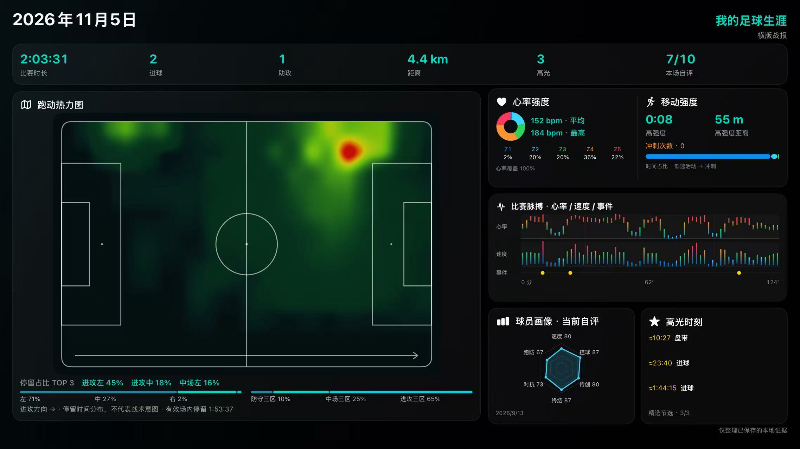

把记录接成一次体验
完成两端的界面与开发，处理记录导入、位置数据和球场映射。位置记录不足时，需要说明展示限制，避免让热图显得比数据本身更确定。
在场上专心踢球，结束后再看表现。
用 Apple Watch 记录场上的运动，在 iPhone 上整理比赛、回看表现，留下一份自己的足球档案。

我把进球、助攻和距离放在最上面，让人先抓住比赛概况。跑动热图占据主要位置，右侧展开运动强度、比赛中的变化和高光时刻。
本场自评、球员自评和运动数据分别呈现，留出空间记录自己的判断。
使用流程示意
开始一次足球运动，把注意力留在球场上。
导入运动记录，补充比赛信息和自己的感受。
回看跑动与运动强度，把高光时刻整理进战报。
产品设计 · iPhone 与 Apple Watch 开发 · 运动数据呈现
完成两端的界面与开发，处理记录导入、位置数据和球场映射。位置记录不足时，需要说明展示限制，避免让热图显得比数据本身更确定。
通过内测观察记录是否方便、回顾是否好懂，再调整操作与信息呈现。
项目正在开发和内测中，目前没有公开下载入口。